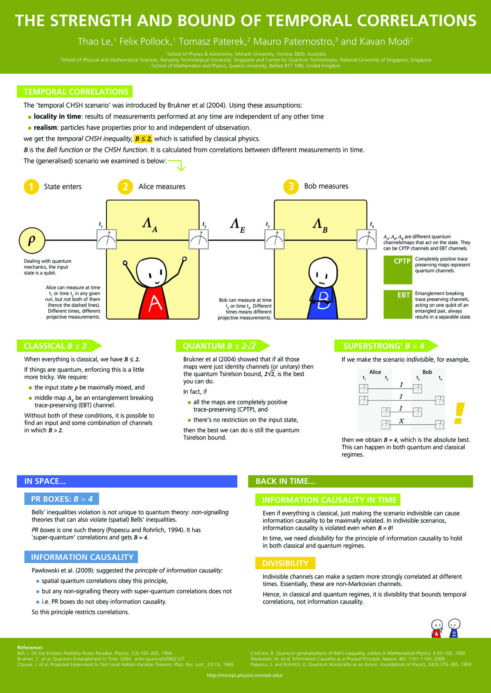

More details on the work in the following poster (and more!) can be found at arXiv:1510.04425 and at J. Phys. A: Math. Theor. 50, 055302 (2017).
This poster was presented at CQD2015.

1School of Physics & Astronomy, Monash University, Victoria 3800, Australia
2School of Physical and Mathematical Sciences, Nanyang Technological University, Singapore and Centre for Quantum Technologies, National University of Singapore, Singapore
3School of Mathematics and Physics, Queens University, Belfast BT7 1NN, United Kingdom
The 'temporal CHSH scenario' was introduced by Brukner et al (2004). Using these assumptions:
we get the
\(B\) is the
The (generalised) scenario we examined is below:
The main figure consists of a two boxes representing two different laboratories. In each box is a picture of a person: Alice on the left and Bob on the right. Alice has their arms in the air, and Bob's arms are folded across their front. A circle representing the quantum state crosses through the two boxes. Where its path meets a line of the box, there is a measurement box with a dotted outline. The system state \( \rho\) first crosses Alice's box at time \(t_1\), then passes through the CPTP map \( \Lambda_A \); it exits Alice's laboratory at time \( t_2 \), passes through the CPTP map \( \Lambda_E \), then enters Bob's laboratory at time \( t_3 \), passes through CPTP map \( \Lambda_B \) and finally exits Bob's laboratory at time \( t_4 \).
The notes on the figure are:
When everything is classical, we have \(B\leq2\). If things are quantum, enforcing this is a little more tricky. We require:
Without both of these conditions, it is possible to find an input and some combination of channels in which \(B>2\).
Brukner et al (2004) showed that if all those maps were just identity channels (or unitary) then the quantum Tsirelson bound \( 2\sqrt{2}\) is the best you can do.
In fact, if
then the best we can do is still the quantum Tsirelson bound.
If we make the scenario
A figure is displayed, showing all the combinations of measurements Alice and Bob can make: there is an identity channel between the combinations of measurements times \( (t_1, t_3) \), \( (t_1, t_4) \), and \( (t_2, t_3) \). However, there is a bit flip X channel in-between measurement times \( (t_2, t_4) \). A large yellow exclaimation mark draws attention to this.
then we obtain \(B=4\), which is the absolute best. This can happen in both quantum and classical regimes.
Bells' inequalities violation is not unique to quantum theory:
Pawlowski et al. (2009): suggested the
So this principle restricts correlations.
Even if everything is classical, just making the scenario indivisible can cause information causality to be maximally violated. In indivisible scenarios, information causality is violated even when \(B=0\)!
In time, we need
Indivisible channels make a system more strongly correlated at different times. Essentially, these are non-Markovian channels.
Hence, in classical and quantum regimes, it is divisiblity that bounds temporal correlations, not information causality.
{kind=link}